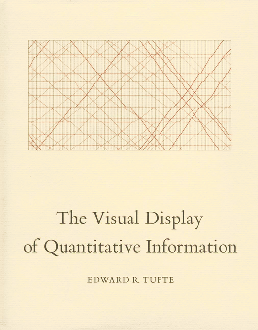
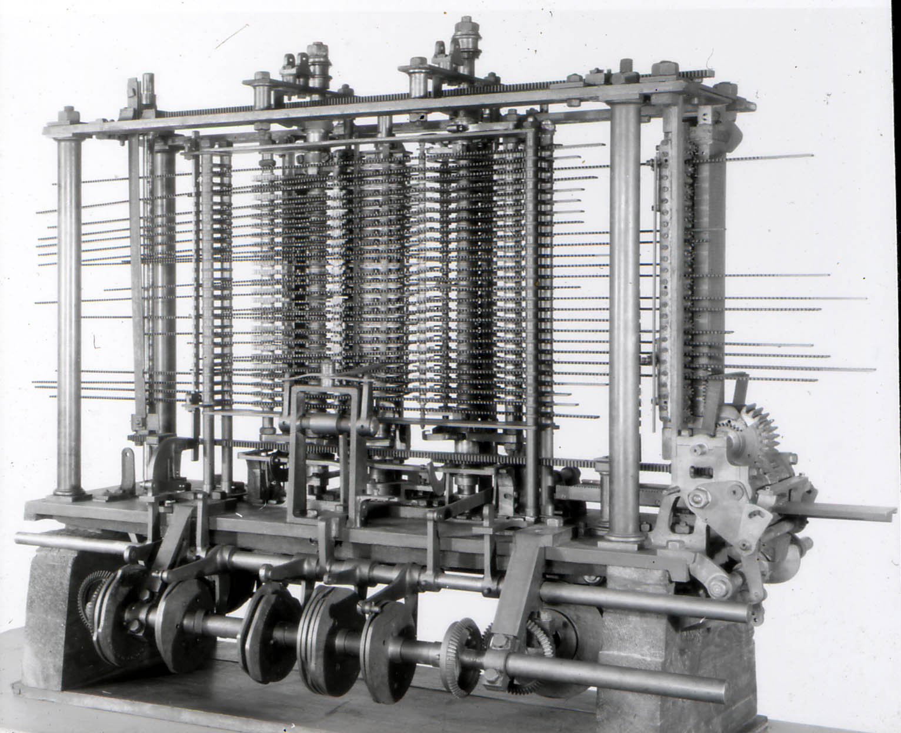
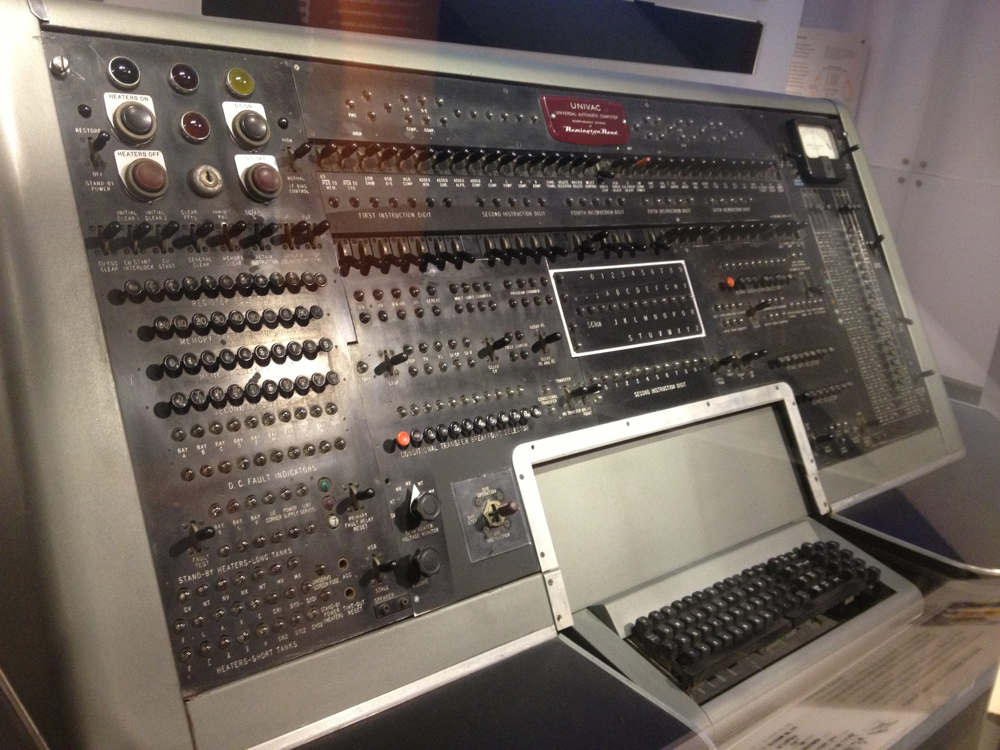
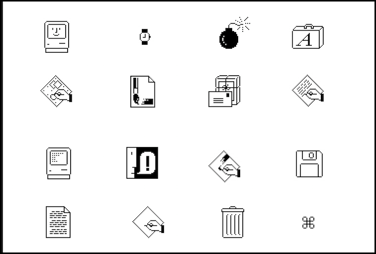
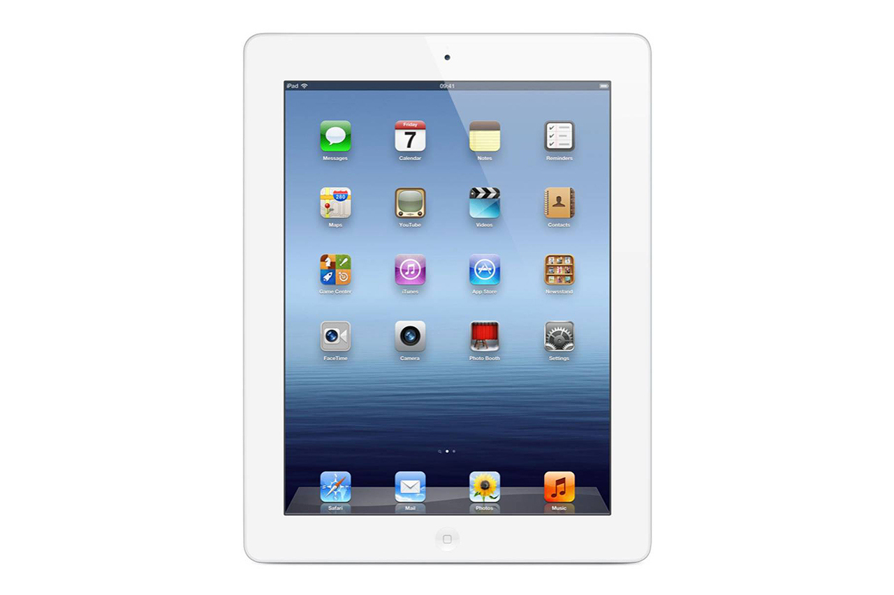
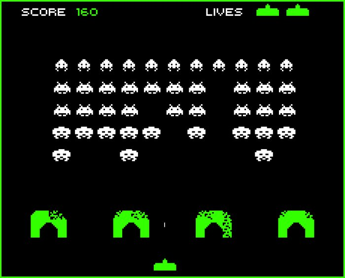
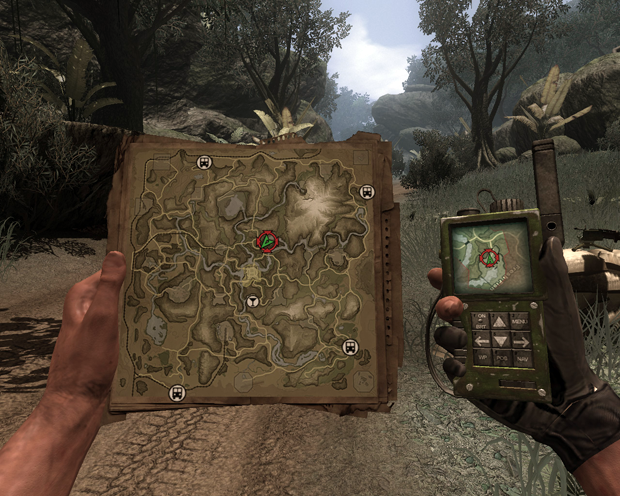
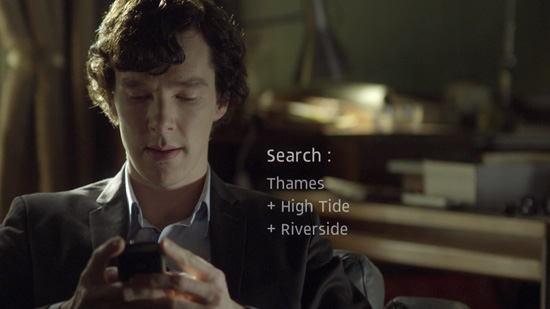
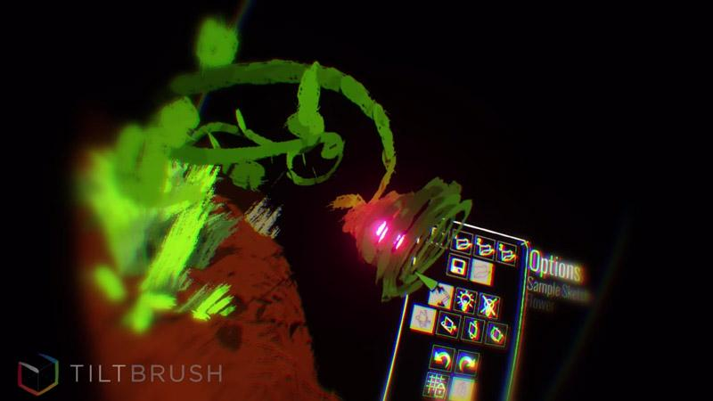
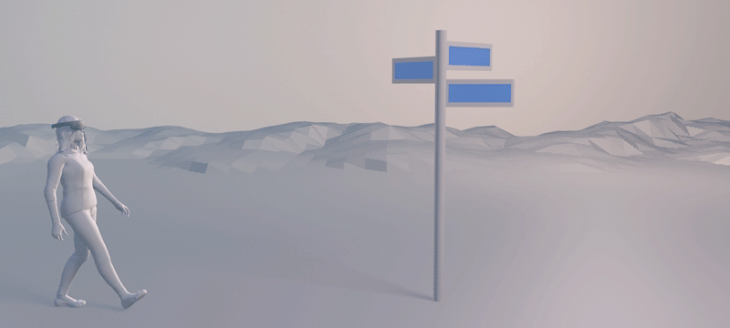

0. interfaces
interfaces
the humane conception of human though
an interface is an entry point
1. what?
what?
what is an interface?
what are some examples of interfaces?
an interface is a boundary
an interface is a point of interaction
an interface opens up possibilities about something that is, at first, not seen
2. the point
the point
the exact point of where you interact
but this point doesn't have to be visual, it can be physical, aural,
or even psychological, in the case of dreams
3. nature
nature
what are some examples of natural interfaces?
a cave is an interface to the underground.
a river bank is an interface to marine life (and vice versa)
the tip of a fruit is an interface which breaks the tree into fruit and branch
4. affordances
affordances
false
hidden
perceptible
obvious
an affordance is a physical specificity
which encourages the use of a particular object/place
(theorized by James Gibson, in his book The Ecological Approach to Visual Perception)
a false affordance is something that looks like it might do something, but doesn't
(i.e. a switch that doesn't turn on a light)
a hidden affordance is a possibility that is not manifested, not shown.
(e.g. using a book as a doorstop). hidden affordances imply discovery and a feeling of creativity in the user
a perceptible affordance is one that is quickly understandable, but not always
(a usb port on a computer can be plugged in, but it's not obvious which side is up)
an obvious affordance is the ideal one. we don't even think about it
(e.g. the handle on a coffee cup, or the cutting edge of a knife)
5. external
external
physical interfaces give us a point of access to an external object
not only does it give us a way to interact with something,
but it also strongly encourages us to use it this way
(when you have a hammer, everything looks like a nail)
6. non-physical
non-physical
are there interfaces for the non-physical?
1.
2.
there are symbols
and there are faces
our faces provide us with a path of action in regards to someone else
(e.g. do we continue the conversation, or do we run away?)
based on how one looks and what one says, you will be able to act accordingly
7. symbols
symbols
symbols such as
- letters
- numbers
8. data visualization
data visualization

this is the first artificial way for us to represent the abstract
interfaces are no longer physical, but also semantic
data visualization made us realize that different representations made us grasp the world in different ways
9. multi-modality
multi-modality
vilem flusser's line vs. plane
using multiple modes in communicating information back to the user
equivalence
specialization
redundancy
complimentarity
transfer
concurrency
equivalence: present the same information in multiple ways
specialization: when the same kind of information is processed the same way
(e.g. error messages in red, warnings in yellow)
redundancy: also presenting the same information in multiple ways
but the fact that it is indeed the same information is not obvious,
therefore leading to useless cognitive load
complimentarity: multiple modes (visual, aural, written) take separate information
and create a new information (gestalt)
transfer: a modality (say, a color) produces information (error) that another
modality (spatial layout, with an alert box) consumes to reinforce the message
concurrency: taking separate information that is not merged,
could potentially lead to cognitive load
10. reinforcing effect
reinforcing effect
the more modalities in the interface
the more effective the message
(but too much of unimodality can have a detrimental effect)
because the user gets the sense that "all information is presented equal" while, for meaningful action,
the user needs to know what is important at a given point of the state of the system
11. rationality vs. emotionality
rationality vs. emotionality

you can use these multimodalities to reinforce a sense of truth
and because we tend to forget that they are artificial
12. faking things
faking things
13. definition
definition
interfaces are designed affordances with a purpose to act and know about something else
and this is even truer in the digital world...
14. digital
digital
the digital
- a black box exclusively made up by people
it is entirely artificial, so you, as the designer, have full power over what is displayed
and what isn't.
you're creating a language (a set of affordances) that your user needs to learn,
if you don't use the pre-established conventions of the field.
15. digital 2
digital 2
so what do digital interfaces link to?
they link to a continuous stream of 0 and 1.
over the time, we got better and better at creating interfaces for what these 0s and 1s mean.
16. computer interfaces
computer interfaces
computer interfaces

started with actual, real threads.
17. computer interfaces 2
computer interfaces 2

then interfaces evolved in order to show the elusiveness of those 0s and 1s
they can now appear on and disappear from the screen,
better representing the concept of Turing's machine.
18. computer interfaces 3
computer interfaces 3

as users became less and less familiar into what a computer is, it became more of a black box
and we had to find metaphors that were __perceptible affordances__ for everybody
e.g. a trashcan, a pen, a bomb.
19. computer interfaces 4
computer interfaces 4

and finally, we get to a beautiful, serene garden of emotional (i.e. visual) representations.
20. abstraction
abstraction
abstracting
this idea of abstraction thus means that we're taking the __essence__ of something
and that we're choosing to represent it as something else, oftentimes easire to understand
abstraction both gives and takes away control.
by limiting the amount of input, the user can focus on the task at hand.
however, when you abstract too much, you also restrict too much.
21. digital world is still real
22. parts of interfaces
parts of interfaces
things are required to make them usable
- input/output
- dialogue
- a function
- an organization
input/output is the look, the initial approach, the first impression,
but also the result, the sensory consequence (colors/shape/movement)
the dialogue is the responsiveness of the interface -the evolution of the input and output over time.
the function is the access to tools, the possibility to do something effectively (actually do it) and efficiently (do it well)
the organization, is how each interface works with each other towards a greater common, a greater effect
interfaces should __provide an invitation__ and __react immediately_
23. questions of interfaces
questions of interfaces
is it useful?
is it obvious?
is it cooperative?
is it consistent?
does it allow for mistakes?
is it modular?
is it informative?
24. types of interfaces
types of interfaces
four broad types of digital interfaces

interfaces in 3D digital environments can be represented as a matrix of:
whether the interface makes sense in the world (physically)
whether the interface makes sense in the fiction (conceptually)
25. non-diegetic
non-diegetic
non-diegetic

does not make sense physically
does not make sense conceptually
26. diegetic
diegetic

makes sense physically
makes sense conceptually
27. meta
meta

does not make sense physically (words floating in space)
makes sense conceptually (the character is aware it is looking at a search menu)
28. spatial
spatial

does not make sense conceptually (buttons and save modes)
makes sense physically (is anchored into space)
29. the interface of your interface
the interface of your interface
digital interfaces rely on physical interfaces
you should always take into account the hardware you're using
how many ways to interact with the world?
tapping, pressing, holding, waving, sliding, expanding, shaking, etc.
30. vr interface
vr interface
what are physical interfaces for vr?
the controller, with touchpads, buttons
the headset, with head movement
the rest of the body, as well as __the relative position of the headset and the controller__
31. vr is space
vr is space
spatiality
in movement
in layout
we've figured out how to use touchpads and buttons
we're still trying to come up with a language for physical interaction
how do our movements allow us to interface with abstract concepts?
32. vr layouts
vr layouts



1. tag-along: the interface is anchored with the user
2. world-locked: the interface is anchored in the world
3. diegetic: the interface is anchored both in the world and in the story
33. conclusion
conclusion
- the interface represents your world.
- the interface is a dialogue between the internal thoughts of the user and the external states of the object, and every dialog can be both rational and emotional.
by designing an interface, you guide and constrain the decisions and actions of the person visiting your world.